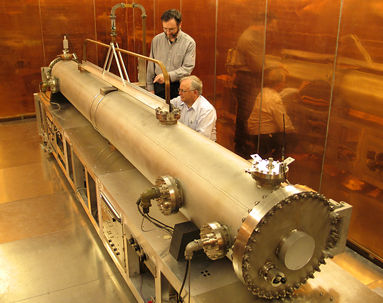

| Back to Index | About Me | Concepts | History | Innovations & News | Gallery | |
Modern Discovery | ||||||
| Quantum mechanics is a fundamental theory that describes the behavior of nature at and below the scale of atoms.[2]: 1.1 It is the foundation of all quantum physics, which includes quantum chemistry, quantum field theory, quantum technology, and quantum information science. | ||||||
Celsium ClockThe cesium clock is the most accurate type of clock yet developed. This device makes use of transitions between the spin states of the cesium nucleus and produces a frequency which is so regular that it has been adopted for establishing the time standard.  |